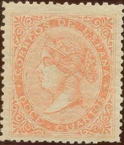
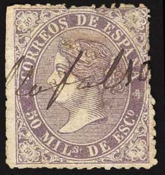
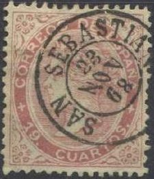

{kind=link}

Postal forgery of the 2 cu value. The "S" of "CORREOS" is badly done. Also the "U" of "CUARTOS" is getting wider at the top. It was used in Barcelona and Gerona.
Return To Catalogue - Spain overview - Spain 1866-1868 Queen Isabella
Note: on my website many of the
pictures can not be seen! They are of course present in the
catalogue;
contact me if you want to purchase it.

Postal forgery of the 2 cu value. The "S" of
"CORREOS" is badly done. Also the "U" of
"CUARTOS" is getting wider at the top. It was used in
Barcelona and Gerona.

Postal forgery of the 20 c value


Quite deceptive postal forgery of the 4 cu value; the triangular
shaped ornament above the "OS" of "CORREOS"
should have a small break at the top right. This postal forgery
doesn't have this break. Also the "S" of
"CORREOS" is badly shaped compared to a genuine stamp.

Postal forgery of the 50 m value with different "5" and
"D" of "DE" slanting too much to the left

Another postal forgery of the 50 m stamp with the facial
expression of the Queen quite different from a genuine stamp.

Postal forgery of the 50 m value (second type), note the
different "S" in "ESPANA", next to it another
postal forgery of the 50 m

Very primitive forgery.
I've been told that the next stamps are forgeries, I have no further information:


(Forgeries)


Forgeries with cancel "TOLOSA 24 MAR 68 SAN SEBASTIAN"
or uncancelled. In my view, in the 19 c, the "U" of
"CUARTOS" is leaning too much backwards. These are
presumably Segui forgeries.

(Forgery)

(Two forgeries of the 19 c red and 19 c brown with the same
cancel!)
Sperati made a forgeries of the 19 c stamps; the differences with the genuine stamp are microscopic, he made two different types of this forgery (Reproductions 'A' and 'B');


(Sperati forgeries, reproduction 'A' and 'B')
Distinghuishing characteristics for
reproduction 'A':
1) There is a dot of color just below the frameline above the
"DE".
2) The number "9" has a small white spur to the left of
the upper part
3) The "C" of "CUARTOS" has a small spur at
the right bottom side
Distinghuishing characteristics for reproduction 'B':
1) The upper left corner is damaged
2) There is a small white dot to the upper right side of the
"A" of "CUARTOS"
3) The ornament to the right of the "S" of
"CUARTOS" is defective
I have seen the 19 c brown and 19 c red in reproduction 'A', for reproduction 'B' I have only seen the 19 c brown. Sperati used genuine stamps from which he removed the image and printed his forged design. Therefore the paper and cancels are genuine.
{kind=link}
{kind=link}